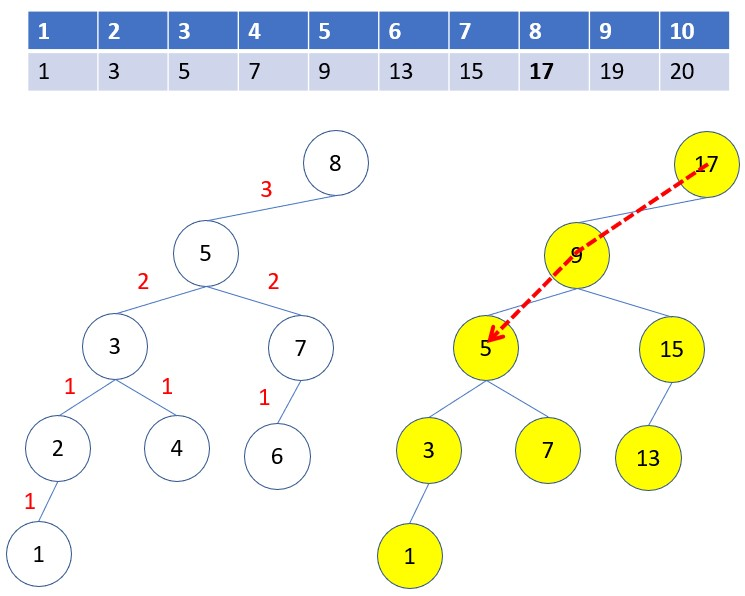

費氏搜尋
December 11, 2021二分搜尋每次會將搜尋區間分為一半，費氏搜尋利用費氏數作為間隔來搜尋下個數，區間收斂的速度更快，過程中只需要用到加、減，不需要除法，在某些 CPU 比較有效率。
解法思路
- 為了計算方便， 可將索引 0 指定為無限小的數，而數列由索引 1 開始，例如：
-
-∞ 1 3 5 7 9 13 15 17 19 20
費氏搜尋使用費氏數列來決定下個數的搜尋位置，若 n 為數列長度，Fʸ 為第 y 個費氏數：
- 找到不大於 n + 1 的最大 Fʸ
- 求 x = y - 1
- 求 m = n - Fʸ
例如，方才的數列長度為 10，因為不大於 10 + 1 的最大費氏數是 8，它是費氏數列（1、1、2、3、5、8、13…）的第六個，因此 Fʸ 為 8，也就是 y 為 6，這時 x 為 6 - 1，也就是 5，m 為 10 - 8，也就是 2。
有了以上資料之後，若 Fʸ 是第 y 個費氏數，索引 Fʸ 處的值未小於要搜尋的值，Fʸ 就是第一個要搜尋的索引，否則第一個搜尋的索引會是 Fʸ + m，加上 m 是為了要讓下個搜尋位置，正好是數列最後一個位置。
若要在方才的數列中搜尋 5，因為 Fʸ 為 8，若值未小於要搜尋的值，因此第一個要搜尋的索引是 8，接下來，若數列中的數大於指定搜尋值時，就往左找，小於時就向右，每次要找的間隔是第 x - 1 費氏數，因為方才就確定了，若值未小於要搜尋的值，第一次一定是往左找。
因此，接下來要找的間隔會是 F⁴（第四個費氏數，也就是 3）、F³（第三個費氏數，也就是2）、F²（第二個費氏數，也就是 1），費氏數為 0 時還沒找到，就表示尋找失敗，如下所示：
如果要搜尋 19，由於第一個搜尋值索引 Fʸ 處的值小於 19，此時必須對齊數列右方，也就是將第一個搜尋值的索引改為 Fʸ + m = 8 + 2 = 10，然後如同上述的方式搜尋，因為搜尋時是陣列從最後一個位置開始，第一次一定是往左找，如下所示：
想瞭解為何可以這麼運用費氏數列進行搜尋，首先可以先知道的是，費氏搜尋與二分搜尋都是分而治之，每次數列分為兩邊，往左或往右繼續分割數列。
在〈二分搜尋〉中看過，如果你將每次切分後選取的數作為節點值，往左切分得到的數作為左子節點，往右切分得到的數作為右子節點，可以得到二分搜尋樹，實際上若使用以上費氏搜尋的方式，將每次切分得到的值作為節點值，建立起左樹、右樹，會得到一棵費氏搜尋樹（Fibonacci Search Tree）。
在理解費氏搜尋樹前，要先來理解費氏樹，由於費氏數是：
F₀ = 0
F₁ = 1
Fₙ = Fₙ₋₁ + Fₙ₋₂
如果有棵二分樹，任意節點值為 Fₙ，n 為大於 0 的數，如果 n 為 1，沒有子節點，若 n 大於 1，左子節點為 Fₙ₋₁，右子節點為 Fₙ₋₂，那麼若根節點值 F₅，會得到以下的費氏樹：

每個節點值都是費氏數，兩個子節點值相加，就是父節點值，而且這棵樹有個特色，子樹具有相同的節點值與結構，就上圖來說，節點值 2 的子樹，其中的節點值與結構相同，如果方才根節點值不是選 F₅，而是從更大的費氏數開始，那麼就會發現具有相同節點值的子樹，其中的節點值與結構都相同。
如果保留上圖的樹結構，先忽略節點值，只考慮未梢節點值與父節點值的差距絕對值為 F₁，每往上一層就是下個費氏數：
然後從最左下的節點值為 1 開始，由下而上、由左而右地加上差距值，作為節點值：
每個節點值，就是費氏搜尋樹使用的索引了，從最左下的節點值為 1 開始，是因為一開始為了計算方便，將索引 0 指定為無限小的數，而數列由索引 1 開始。
實際上只的用到根節點的左子樹，因為對於數列 1 3 5 7 9 13 15 17 19 20，若要在數列中搜尋 5，費氏搜尋樹就會是下圖右邊那棵樹，17 右邊不列出，若值未小於要搜尋的值，第一次一定是往左找：

若要在方才的數列中搜尋 19，會從數列最後一個位置開始，因為是最後一個位置，第一次一定是往左找，由於對齊最後一個位置，等同於尋找時，方才的索引樹節點值全加上 2：
怎麼少這麼多節點？別忘了，對從最右邊開始搜尋，表示目標值大於 Fʸ，左半邊的元素自然有許多不會搜尋到。
程式實作
#include <stdio.h>
#include <stdlib.h>
#include <time.h>
#include <stdio.h>
#include <stdlib.h>
#include <time.h>
#define INT_MIN -9999
void createFibonacci(int[], int); // 建立費氏數列
int findY(int[], int); // 找Y值
int fibonacciSearch(int[], int, int); // 費氏搜尋
int main(void) {
int number[] = {1, 2, 3, 5, 6, 8, 9, 10, 11};
int length = sizeof(number) / sizeof(int);
printf("數列：");
int i;
for(i = 0; i < length; i++)
printf("%d ", number[i]);
printf("\n輸入尋找對象：");
int find;
scanf("%d", &find);
if((i = fibonacciSearch(number, length, find)) >= 0)
printf("找到數字於索引 %d ", i);
else
printf("\n找不到指定數");
printf("\n");
return 0;
}
// 建立費氏數列
void createFibonacci(int Fib[], int length) {
Fib[0] = 0;
Fib[1] = 1;
int i;
for(i = 2; i < length; i++)
Fib[i] = Fib[i-1] + Fib[i-2];
}
// 找 y 值
int findY(int Fib[], int n) {
int i = 0;
while(Fib[i] <= n) i++;
i--;
return i;
}
// 費氏搜尋
int fibonacciSearch(int number[], int length, int find) {
int* Fib = malloc(length * sizeof(int));
int f;
for(f = 0; f < length; f++) {
Fib[f] = INT_MIN;
}
createFibonacci(Fib, length);
int y = findY(Fib, length + 1);
int m = length - Fib[y];
int x = y - 1;
int i = x;
if(number[i] < find)
i += m;
int result = -1;
while(Fib[x] > 0) {
if(number[i] < find)
i += Fib[--x];
else if(number[i] > find)
i -= Fib[--x];
else {
result = i;
break;
}
}
free(Fib);
return result;
}
public class Search {
public static int fibonacci(int[] number, int des) {
int[] fib = createFibonacci(number.length);
int max = number.length - 1;
int y = findY(fib, max+1);
int m = max - fib[y];
int x = y - 1;
int i = x;
if(number[i] < des)
i += m;
while(fib[x] > 0) {
if(number[i] < des)
i += fib[--x];
else if(number[i] > des)
i -= fib[--x];
else
return i;
}
return -1;
}
private static int[] createFibonacci(int max) {
int[] fib = new int[max];
for(int i = 0; i < fib.length; i++) {
fib[i] = Integer.MIN_VALUE;
}
fib[0] = 0;
fib[1] = 1;
for(int i = 2; i < max; i++)
fib[i] = fib[i-1] + fib[i-2];
return fib;
}
private static int findY(int[] fib, int n) {
int i = 0;
while(fib[i] <= n) i++;
i--;
return i;
}
public static void main(String[] args) {
int[] number = {1, 2, 3, 5, 6, 8, 9, 10, 11};
int find = Search.fibonacci(number, 2);
System.out.println(find >= 0 ? "找到數值於索引" + find : "找不到數值");
}
}
import sys
def search(number, des):
fib = fibonacci(len(number))
max = len(number) - 1
y = findY(fib, max + 1)
m = max - fib[y]
x = y - 1
i = x
if number[i] < des:
i += m
while fib[x] > 0:
if number[i] < des:
x -= 1
i += fib[x]
elif number[i] > des:
x -= 1
i -= fib[x]
else:
return i
return -1
def fibonacci(max):
fib = [sys.maxsize] * max
fib[0] = 0
fib[1] = 1
for i in range(2, max):
fib[i] = fib[i -1] + fib[i - 2]
return fib
def findY(fib, n):
i = 0
while fib[i] <= n:
i += 1
return i - 1
number = [1, 4, 2, 6, 7, 3, 9, 8]
number.sort()
find = search(number, 3)
print("找到數值於索引 " + str(find) if find >= 0 else "找不到數值")
object Search {
def fibonacci(number: Array[Int], des: Int): Int = {
val fib = fibonacci(number.length)
def y(i: Int): Int = if(fib(i) <= number.length) y(i + 1) else i - 1
def search(x: Int, i: Int): Int = {
if(fib(x) > 0 && number(i) != des) {
if(number(i) < des) search(x - 1, i + fib(x - 1))
else search(x - 1, i - fib(x - 1))
} else i
}
val x = y(0) - 1
if(number(x) < des) search(x, x + number.length - 1 - fib(x + 1))
else search(x, x)
}
private def fibonacci(max: Int): Array[Int] = {
def fib(n: Int): Int = n match {
case 0 => 0
case 1 => 1
case _ => fib(n - 1) + fib(n - 2)
}
(for(i <- 0 until max) yield fib(i)).toArray
}
}
val number = Array(1, 2, 3, 4, 6, 7, 8)
val find = Search.fibonacci(number, 3)
println(if(find >= 0) "找到數值於索引 " + find else "找不到數值")
# encoding: UTF-8
class Integer
N_BYTES = [42].pack('i').size
N_BITS = N_BYTES * 8
MAX = 2 ** (N_BITS - 2) - 1
MIN = -MAX - 1
end
def search(number, des)
fib = fibonacci(number.length)
max = number.length - 1
y = findY(fib, max + 1)
m = max - fib[y]
x = y - 1
i = x
if number[i] < des
i += m
end
while fib[x] > 0
if number[i] < des
x -= 1
i += fib[x]
elsif number[i] > des
x -= 1
i -= fib[x]
else
return i
end
end
-1
end
def fibonacci(max)
fib = Array.new(max, Integer::MAX)
fib[0] = 0
fib[1] = 1
2.upto(max - 1) { |i|
fib[i] = fib[i -1] + fib[i - 2]
}
fib
end
def findY(fib, n)
i = 0
while fib[i] <= n
i += 1
end
i - 1
end
number = [1, 4, 2, 6, 7, 3, 9, 8]
number.sort!
find = search(number, 2)
print find >= 0 ? "找到數值於索引 " + find.to_s : "找不到數值", "\n"
function fibonacciSearch(number, des) {
let fib = createFibonacci(number.length);
let max = number.length - 1;
let y = findY(fib, max+1);
let m = max - fib[y];
let x = y - 1;
let i = x;
if(number[i] < des) {
i += m;
}
while(fib[x] > 0) {
if(number[i] < des)
i += fib[--x];
else if(number[i] > des)
i -= fib[--x];
else
return i;
}
return -1;
}
function createFibonacci(max) {
let fib = [];
for(let i = 0; i < max; i++) {
fib[i] = Number.MAX_SAFE_INTEGER;
}
fib[0] = 0;
fib[1] = 1;
for(let i = 2; i < max; i++) {
fib[i] = fib[i-1] + fib[i-2];
}
return fib;
}
function findY(fib, n) {
let i = 0;
while(fib[i] <= n) i++;
i--;
return i;
}
let number = [1, 2, 3, 5, 6, 8, 9, 10, 11];
console.log(fibonacciSearch(number, 2));
import Data.List
fibseq max =
_fib [1, 0] max 2
where
_fib seq max count =
if max == count then reverse seq
else
let f = (seq !! 0) + (seq !! 1)
in _fib (f:seq) max (count + 1)
findy fib n = (length $ takeWhile (<=n) fib) - 1
fibSearch number n =
let
leng = length number
fib = fibseq leng
y = findy fib leng
m = leng - 1 - (fib !! y)
x = y - 1
i = if (number !! x) < n then x + m else x
in _search fib i x
where
_search fib i x =
if (fib !! x) <= 0 then -1
else
let elem = number !! i
x_1 = x - 1
in
if elem < n then _search fib (i + (fib !! x_1)) x_1
else if elem > n then _search fib (i - (fib !! x_1)) x_1
else i
main = print $ fibSearch [1, 2, 3, 4, 6, 7, 8] 6